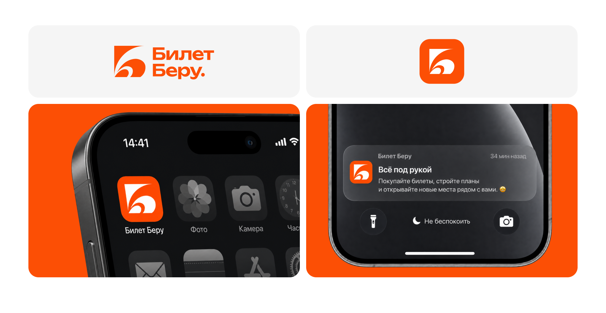
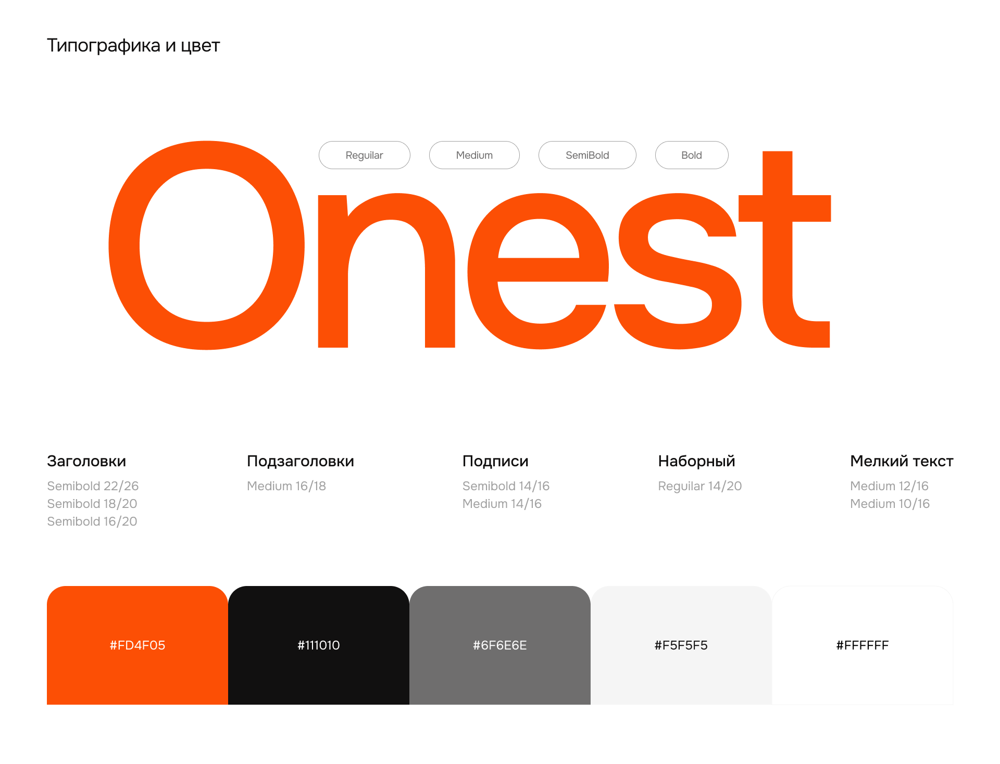
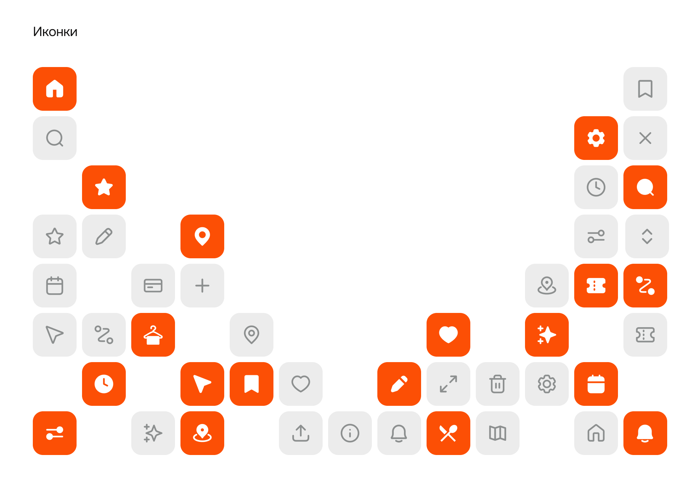
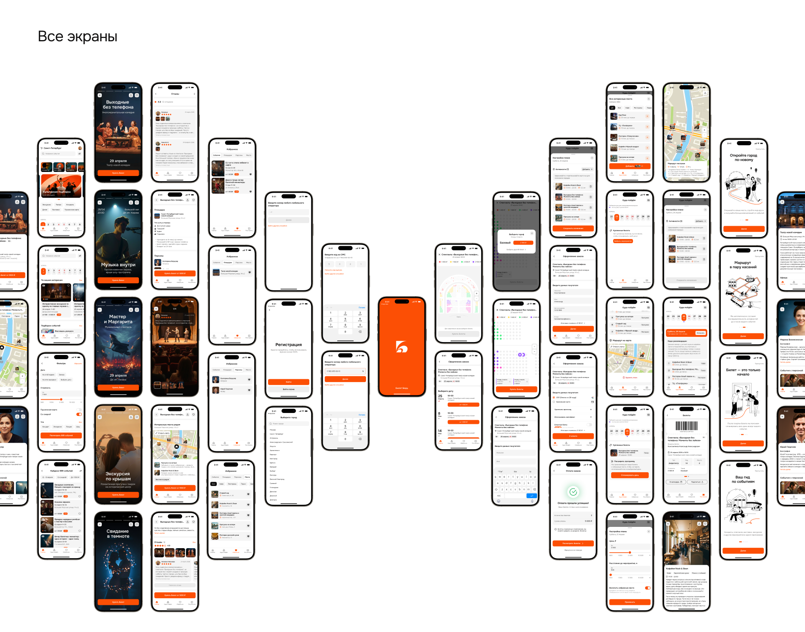

Бренд
Логотип строится на букве «Б», в форме которой читается сцена и занавес. Фирменный оранжевый используется как акцент: иконка приложения, CTA, ключевые состояния.

Принципы системы: крупная типографика, понятные CTA, минимум когнитивной нагрузки, единая система компонентов, предсказуемая навигация.
Типографика и цвет
Onest
| Роль | Начертание / кегль |
|---|---|
| Заголовки | SemiBold 22/26 · 18/20 · 16/20 |
| Подзаголовки | Medium 16/18 |
| Подписи | SemiBold 14/16 · Medium 14/16 |
| Наборный | Regular 14/20 |
| Мелкий текст | Medium 12/16 · 10/16 |
Палитра
| Цвет | HEX |
|---|---|
| ■ Акцент | #FD4F05 |
| ■ Основной текст | #111010 |
| ■ Вторичный текст | #6F6E6E |
| □ Фон карточек | #F5F5F5 |
| □ Фон | #FFFFFF |

Иконки

Все экраны
